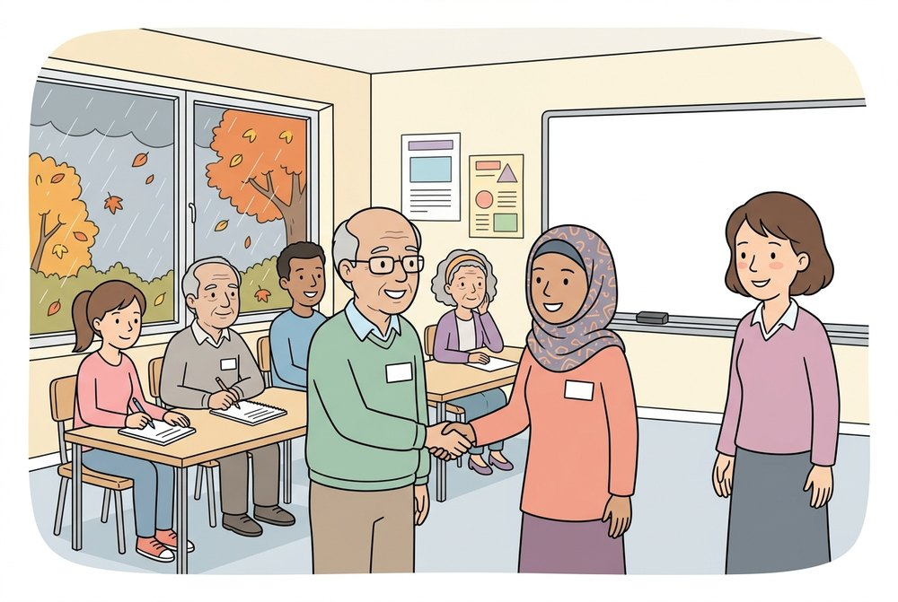
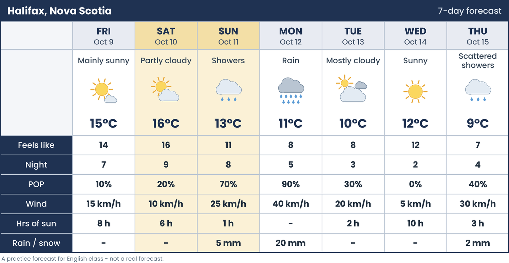
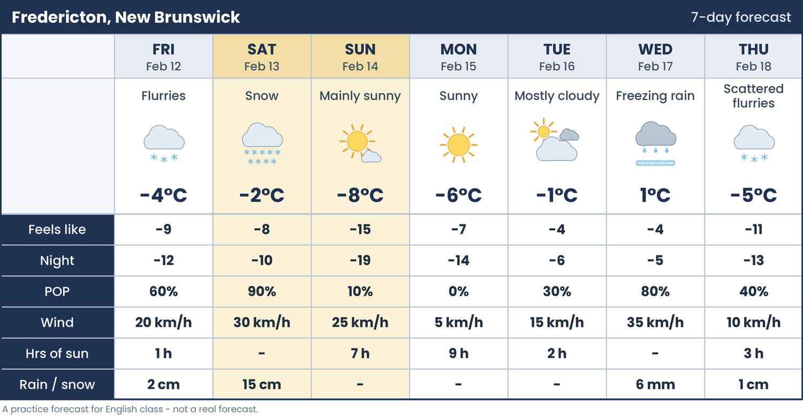
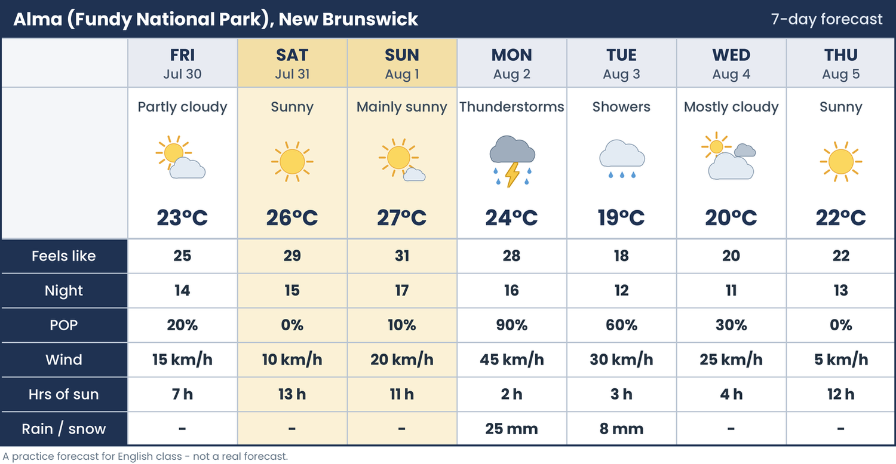
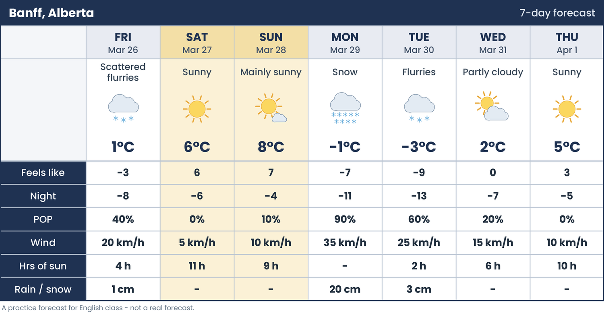
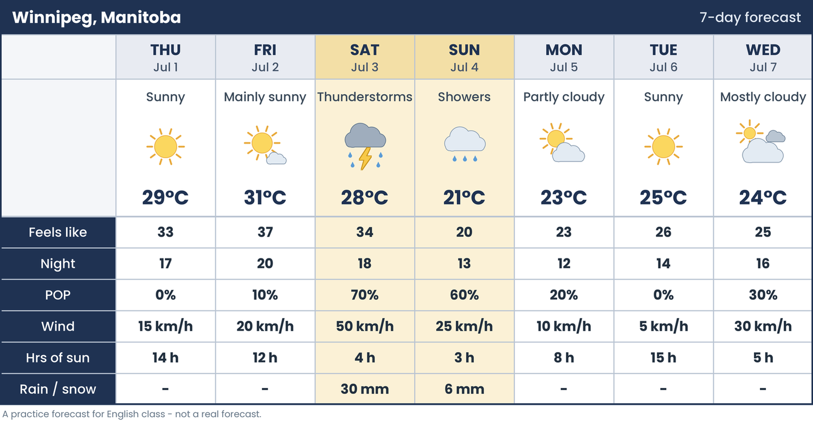

First Class: Nice to Meet You + How's the Weather? (2 h 30, in person)

1. Welcome (10 min). Name cards. Two truths and a lie: the teacher first, then the students.
2. Before you start (10 min). Look at the classroom picture. Then match the questions and the answers.
3. Interview your partner (25 min). PAIRS. Put the questions in order, for or since, then the interview. Introduce your partner to the class (Audio tab, Track 1 is the model).
4. Find someone who (15 min). WHOLE CLASS. Make the questions, then stand up, walk around and ask. A different name in each box.
5. Our class (10 min). Class days and times, the class rules, and PBLA in simple words. Then a 10-minute break.
Break (10 min). Part 2 is about the weather.
8. Small talk (15 min). Four short conversations (Audio tab, Tracks 4 to 7). Then practise small talk standing up, changing partners.
Homework: the practice form (30 questions, you see your score at the end) -
open the form - plus any game on this page.
Games What's the weather? sun or sunny? Hot or cold? Listen: the temperature Listen: the weather Small talk What's the question? for or since?
What's the weather? Look at the picture. Click the word.
Score: 0 /0 Streak: 0 Round: 1 /10
Play Again sun or sunny? Noun or adjective? Choose the correct word.
Score: 0 /0 Streak: 0 Round: 1 /10
Play Again Hot or cold? Read the temperature. What is it like? Click the word.
Score: 0 /0 Streak: 0 Round: 1 /10
Play Again Listen: the temperature Press Listen. What temperature do you hear? Click it.
Score: 0 /0 Streak: 0 Round: 1 /10
Play Again Listen: the weather Press Listen. What is the weather like? Click the word.
Score: 0 /0 Streak: 0 Round: 1 /10
Play Again Small talk Someone talks to you about the weather. Choose the best answer.
Score: 0 /0 Streak: 0 Round: 1 /10
Play Again What's the question? Read the answer. Choose the question.
Score: 0 /0 Streak: 0 Round: 1 /10
Play Again for or since? Choose for or since.
Score: 0 /0 Streak: 0 Round: 1 /10
Play Again
Getting the Weather Forecast - Lesson 1: The Long-Range Forecast
Four class days. All the forecasts on this page are practice forecasts for English class - they are not real forecasts.
Day 1: Weather in Canada and Forecast Words
1 Before You Start (10 min). The picture, how we check the weather, and a quick review of weather adjectives.
2 The Four Seasons (20 min). Read about the seasons. True or false, which season is it, and pair talk.
Break (10 min).
4 What Kind of Forecast? (15 min). Forecast and report; short-range and long-range.
Homework, Day 1: the practice form (30 questions, you see your score at the end) -
open the form - plus the Day 1 games on this page.
Day 2: The Parts of a Long-Range Forecast

2 Two Parts: Overview and Details (20 min). The general overview is at the top. The details are at the bottom.
3 A Forecast Is a Table (15 min). Titles, rows, columns and cells.
Break (10 min).
5 Scanning for Certain Days (25 min). Move your eyes quickly. Find only the days you need.
6 Communicate: Information Gap (25 min). Ask your partner for the missing numbers (Track 2 is the model).

Homework, Day 2: the practice form (30 questions, you see your score at the end) -
open the form - plus the Day 2 games on this page.
Day 3: Finding Details, Comparing Days, Making Decisions

1 Before You Start (10 min). A 7-day forecast for Alma, beside Fundy National Park.
2 Scanning for Details (25 min). The Z pattern: down the column, left to the name, right to the cell.
Break (10 min).
5 Making Decisions (20 min). Should, because, so: what will you do, and why?

Homework, Day 3: the practice form (30 questions, you see your score at the end) -
open the form - plus the Day 3 games on this page.
Day 4: Review and Reading Skill-Using Task

1 Review (20 min). Forecast words, the parts of a forecast, and the grammar from this week.
Break (10 min).
4 Write a Message (25 min). Write to a friend about the weather and your plans.
5 Reading Skill-Using Task (40 min). Your teacher will give you the task.
Homework, Day 4: play the Day 4 games on this page (Forecast - Games).
Forecast - Games Choose a game. Each game has 10 rounds. Play again for new questions.
Day 1
Forecast Pictures
What Does It Mean?
Seasons and Regions
Will or Won't?
Listen: Will or Won't?
Day 2
Parts of a Forecast
Short Forms
Scan the Forecast: Halifax
Listen: Forecast Numbers
Day 3
Colder, the Coldest
Scan the Details: Alma
Number 1: Fredericton
What Should You Do?
Day 4
Scan the Forecast: Winnipeg
Forecast Review
Forecast Pictures Look at the picture from a weather website. Click the forecast word.
Score: 0 /0 Streak: 0 Round: 1 /10
Play Again What Does It Mean? Read the meaning. Click the word.
Score: 0 /0 Streak: 0 Round: 1 /10
Play Again Seasons and Regions Read the sentence. Click the season or the region.
Score: 0 /0 Streak: 0 Round: 1 /10
Play Again Will or Won't? Read the forecast. Click the words for the blank.
Score: 0 /0 Streak: 0 Round: 1 /10
Play Again Listen: Will or Won't? Listen to the sentence. Click what you heard.
Score: 0 /0 Streak: 0 Round: 1 /10
Play Again Parts of a Forecast Read and click the best answer.
Score: 0 /0 Streak: 0 Round: 1 /10
Play Again Short Forms What does it mean? Click the best answer.
Score: 0 /0 Streak: 0 Round: 1 /10
Play Again Scan the Forecast: Halifax Scan the forecast. Find the answer fast!
Score: 0 /0 Streak: 0 Round: 1 /10
Play Again Listen: Forecast Numbers Listen. Click the number you heard.
Score: 0 /0 Streak: 0 Round: 1 /10
Play Again Colder, the Coldest Click the correct words for the blank.
Score: 0 /0 Streak: 0 Round: 1 /10
Play Again Scan the Details: Alma Scan in a Z. Find the answer fast!
Score: 0 /0 Streak: 0 Round: 1 /10
Play Again Number 1: Fredericton Look at the whole week. Click the day.
Score: 0 /0 Streak: 0 Round: 1 /10
Play Again What Should You Do? Read and click the best answer.
Score: 0 /0 Streak: 0 Round: 1 /10
Play Again Scan the Forecast: Winnipeg This forecast starts on a Thursday. Scan and find the answer fast!
Score: 0 /0 Streak: 0 Round: 1 /10
Play Again Forecast Review Read and click the best answer.
Score: 0 /0 Streak: 0 Round: 1 /10
Play Again Audio Recorded for this unit. The track numbers are the same as in the unit document.
Track 1 - Model: introduce your partner
Exercise 3E. Listen to the model. Then introduce your partner.
Track 2 - Dictation: weather sentences
Exercise 6D. Write the sentence. Each sentence is said two times.
Track 3 - Listen and write the temperature
Exercise 7C. Write the number. Each temperature is said two times.
Track 4 - Conversation 1: at the bus stop
Exercise 8A, questions 1 and 2. Also exercise 8B.
Track 5 - Conversation 2: at work
Exercise 8A, questions 3 and 4.
Track 6 - Conversation 3: two neighbours
Exercise 8A, questions 5 and 6.
Track 7 - Conversation 4: on the phone
Exercise 8A, questions 7 and 8.
Track 8 - Model: Weather across Canada
Exercise 9A. Listen to the model. Then ask your group.
Getting the Weather Forecast - Lesson 1
Day 1, Track 1 - Dictation: will and won't
Exercise 6D. Write the sentence. Each sentence is said two times.
Day 1, Track 2 - Model: ask about the forecast
Exercise 6E. Listen to the model. Then ask your partner about every day.
Day 2, Track 1 - Listen and write the numbers
Exercise 4B. Write the number the short way. Each one is said two times.
Day 2, Track 2 - Model: the information gap
Exercise 6A. Listen to the model. Then ask your partner for the missing numbers.
Day 3, Track 1 - Which day is it?
Exercise 3D. Look at the Alma forecast. Write the day. Each one is said two times.
Day 3, Track 2 - Model: plan a getaway
Exercise 7C. Listen to the model. Then plan with your group.
Day 4, Track 1 - Model: report your plan
Exercises 3A and 3B. Listen to Mei's report and complete the table.